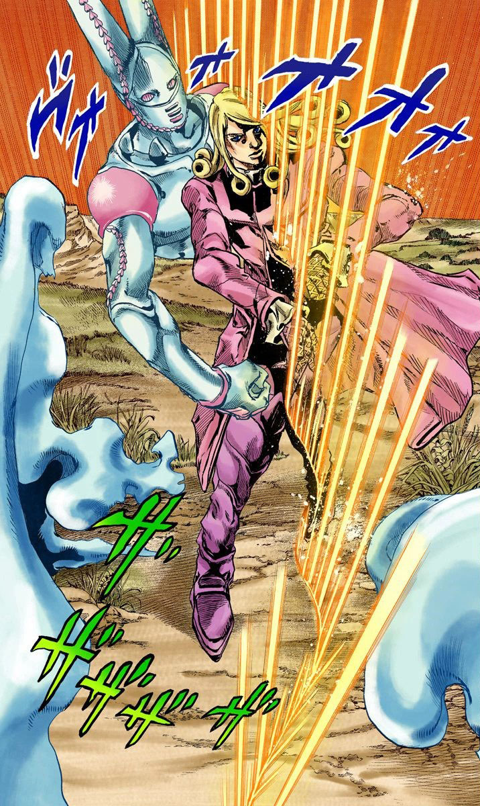
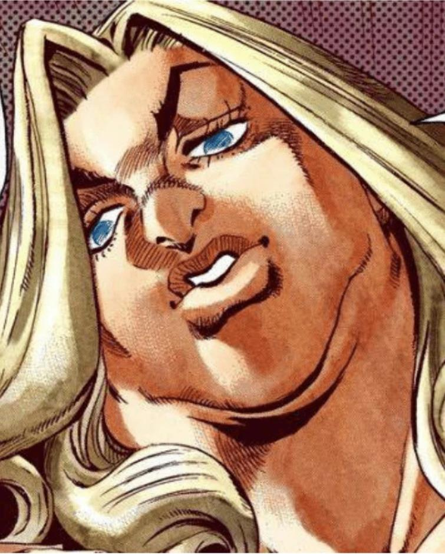

JoJo's Bizarre Adventure: Part 7 - Steel Ball Run
Synopsis:
Steel Ball Run is the seventh part of JoJo's Bizarre Adventure. It was serialized in Weekly Shōnen Jump in 2004 before transitioning to Ultra Jump, where it ran from 2005 to 2011. This part is set in an alternate continuity from Parts 1-6 of the series, retaining iconic elements such as Stands while introducing fresh perspectives and connections to earlier storylines.
The story takes place in the United States in 1890, centering on Johnny Joestar, a paraplegic ex-jockey, and Gyro Zeppeli, a master of a mysterious art known as the Spin. Together, they compete in the Steel Ball Run, a perilous multi-stage horse race spanning America, with a grand prize of $50 million.
The narrative begins with Steven Steel, the race's promoter, unveiling the event and introducing a diverse array of contestants, including the enigmatic Diego Brando, cowboy Mountain Tim, and the free-spirited Pocoloco. Notable among the competitors are Sandman, fleeing his tribe after adopting English customs, and Gyro Zeppeli, who astonishes onlookers by defeating a thief with his Steel Ball. Johnny, witnessing the Steel Ball's miraculous power, is inspired to participate despite his disability, driven by hope and determination.
As the race kicks off, Johnny demonstrates newfound resilience, influenced by Gyro's teachings about the Spin. The journey ahead is fraught with danger, intense rivalries, and revelations, all while exploring themes of perseverance, redemption, and the pursuit of dreams in a vast, untamed landscape.
Plot Summary
Sandman, a Native American with a mysterious power, flees his people and decides to join the Steel Ball Run—a cross-country horse race across America with a $50,000,000 prize. Promoter Steven Steel announces the event, attracting competitors like British jockey Diego Brando, cowboy Mountain Tim, and emancipated slave Pocoloco. Among them is Gyro Zeppeli, who uses enigmatic Steel Balls with unique abilities. Former jockey Johnny Joestar, inspired by Gyro’s abilities, enters the race despite being paraplegic.
In the first stage, Gyro uses his Steel Balls to gain the lead but faces rivals like Sandman and Diego. Despite initial victories, Gyro is penalized for endangering others. During the second stage, Johnny learns about the Spin technique, an essential element of Gyro's Steel Ball power. The pair encounters deadly competitors, such as the Boomboom family and Mrs. Robinson, as well as Devil’s Palm, a phenomenon granting Stand abilities.
The race becomes intertwined with a greater mystery involving relics called the Saint’s Corpse, coveted by the U.S. President Funny Valentine. Johnny and Gyro discover parts of the Corpse and face threats like Diego’s dinosaur Stand and Ringo Roadagain, a gunslinger with time-reversing abilities. Lucy Steel, Steven’s wife, infiltrates Valentine’s circle to uncover his plans, but her actions put her in danger.
As the race progresses, Johnny masters his Stand, Tusk, while Gyro’s past as an executioner drives his quest for redemption. They battle increasingly powerful enemies, uncover Valentine’s plan to unite the Corpse, and navigate alliances with racers like Hot Pants. The stakes rise with each stage, merging the thrill of competition with a deeper struggle involving the Saint’s Corpse and its mysterious powers. Johnny Joestar and Gyro Zeppeli continue their journey across the frozen strait, encountering a mysterious wolf that trails them. Midway, they are ambushed by Wekapipo's steel Wrecking Ball, which disrupts their left-side perception. In the ensuing chaos, Johnny confronts Magent Magent, whose Stand, 20th Century BOY, grants him impenetrable defense while kneeling. Magent Magent shoots the wolf, incapacitating it before targeting Gyro. After a tense struggle, Gyro uses his Steel Ball to incapacitate Magent Magent by leveraging a distraction.
Despite Wekapipo’s efforts to eliminate any chance of recreating the Golden Rectangle, including destroying the wolf’s body, snow begins to fall, providing Gyro with the means to reconstruct it using snowflakes. Simultaneously, Johnny discovers the Corpse’s Legs emerging from the wolf's corpse. Wekapipo, gravely injured, pleads for death, but Gyro spares him, revealing his sister is alive and in hiding. Gyro urges Wekapipo to protect Lucy Steel before departing with Johnny and the Legs.
As they race toward the goal of the sixth stage, Pocoloco’s Stand ability, Hey Ya!, helps him avoid a chasm. However, Johnny and Gyro outmaneuver him by combining their skills to cross directly using a makeshift steel rope, winning the stage. Meanwhile, Magent Magent, left to crawl to civilization, overhears critical information about Lucy Steel being a traitor to the government.
A flashback reveals the body of Lucy Steel being discovered, although Steven Steel realizes the corpse isn’t truly his wife. Six weeks later, Johnny and Gyro spot Hot Pants racing toward a nearby town. Following her into a garbage dump, they encounter a nun-like figure. As Gyro searches for Hot Pants’s Corpse Parts, they are attacked by Civil War, a Stand manifesting guilt as physical forms. Hot Pants is paralyzed by the ghost of her sacrificed brother, and Johnny struggles against the Stand’s effects. After Gyro locates the Stand user, Axl RO, Johnny overcomes his doubts and evolves Tusk to ACT3, forcing Axl RO into a corner. However, Valentine arrives, killing Axl RO and collecting the Corpse Parts.
Valentine’s grand plan is revealed as Lucy disguises herself as Scarlet Valentine to infiltrate his inner circle. Her attempt to assassinate him fails due to his Stand, Dirty Deeds Done Dirt Cheap, which manipulates parallel dimensions. Valentine discovers that Lucy has become the host for the Corpse and kidnaps her to secure its power. Meanwhile, Gyro introduces Johnny to the ultimate level of the Golden Rectangle, a technique requiring horseback precision, as they prepare to rescue Lucy and confront Valentine.
In the climactic battle aboard a moving train, Valentine’s Stand evolves into D4C Love Train, redirecting misfortune away from him. Despite its immense power, Gyro harnesses the Golden Spin, creating Ball Breaker, a Stand capable of bypassing Valentine’s dimensional abilities. Though Gyro defeats Valentine’s clones, the president manages to scrape away part of the Steel Ball’s power, ultimately killing Gyro. Johnny uses the Golden Rectangle to evolve Tusk into ACT4, delivering infinite rotational energy that immobilizes Valentine across dimensions. Valentine offers a truce, but Johnny kills him after testing his honesty.
As Johnny mourns Gyro, an alternate Diego Brando appears, wielding THE WORLD, capable of stopping time. In the final stage of the Steel Ball Run, Diego defeats Johnny by turning his infinite rotation against him but is ultimately destroyed by Lucy using the original Diego’s severed head. The Saint's Corpse is sealed away, declared unfit for any owner. Johnny, having regained full use of his legs, takes Gyro’s body back to Naples, concluding his journey with newfound resolve.
Years later, the Kingdom of Naples falls, and the Zeppeli family vanishes into obscurity. Marco receives amnesty, but the legend of the Steel Ball Run remains a tale of sacrifice, ambition, and the unyielding will to achieve greatness.



Comments